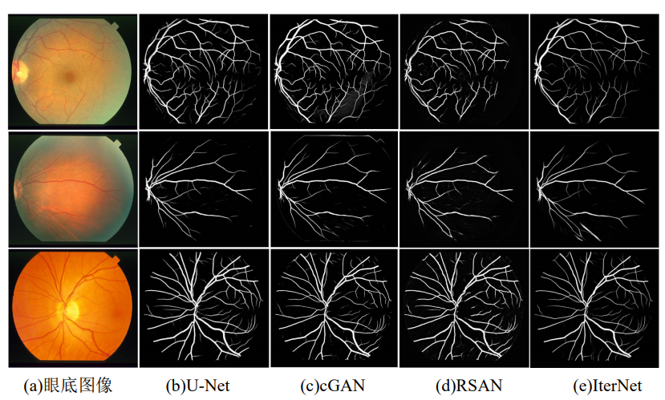
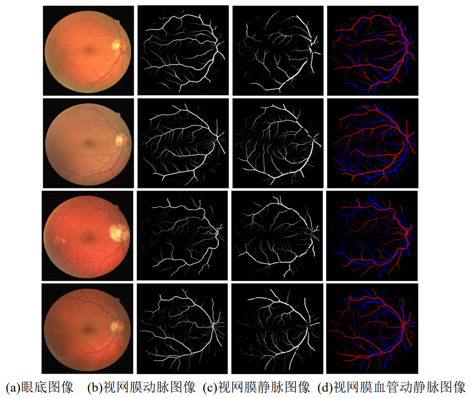

视网膜血管分割和动静脉分类
研究表明，糖尿病并发症会导致视网膜血管形态发生异常。临床上，眼底图像中一定范围内的视网膜动静脉形态变化被作为糖尿病视网膜病变病程的判断依据。 然而目前，医生主要通过人工标注的方法对视网膜血管进行多点采样测量。该方法耗时费力，且主观性强，不适合大量的糖尿病视网膜病变筛查工作。 因此，实现眼底图像视网膜血管的自动化分割和动静脉自动分类，对糖尿病视网膜早期病变的客观、快速诊断具有重要意义。
我们利用U-Net 框架分别实现了眼底图像视网膜血管的分割和动静脉的分类。 视网膜血管分割部分，针对原始 U-Net 在分割血管时，存在抗干扰能力弱和血管连通性差的问题，我们采用的方法在 U-Net 中添加 mini-UNets 的迭代体系结构和跳过连接方法， 以学习更多区分视网膜血管和非血管像素的特征，并抑制由于网络深度增加出现的过拟合现象。视网膜血管动静脉分类部分， 针对眼底图像中视网膜动脉或视网膜静脉的像素数与背景像素数之间的不平衡以及现有方法分割能力差等问题，我们提出了基于并联 IterNet 网络的视网膜血管动静脉分类方法， 该方法将眼底图像和分割后的视网膜血管图像作为输入，减少了标签分布的偏差；并且将视网膜血管动静脉分类任务划分为视网膜动脉分割和视网膜静脉分割两部分，利用相对容易的血管分割任务，提高了视网膜血管动静脉分类的性能。

